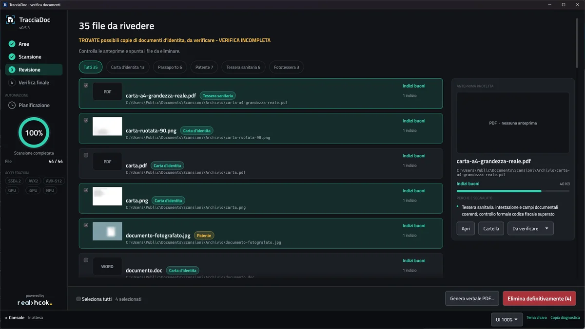
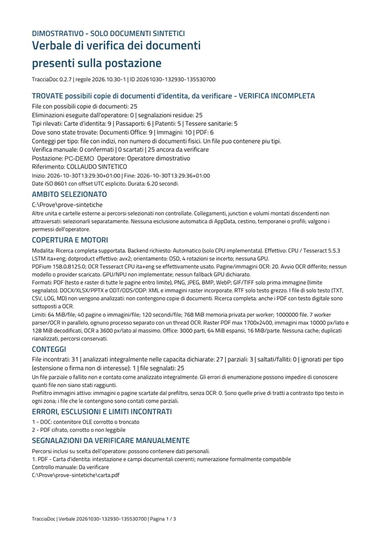

TracciaDoc: find leftover ID document copies on your PC
Find, review, delete, verify.
TracciaDoc is a free, open-source Windows 10/11 app that scans your disks for forgotten scans and photos of ID cards, driving licences, passports, health cards and ID-style photos. It shows blurred previews, deletes only what you tick and produces a PDF report of the clean-up. Everything runs offline.

Why document scans stay on the PC
When an office issues documents or handles paperwork, scans end up in Downloads, Documents or on the Desktop and stay there for years. TracciaDoc finds them, so you can apply data minimisation (GDPR Art. 5) without searching folder by folder.
Fully local
No cloud, no telemetry: no file ever leaves the computer. Offline OCR (Italian).
Reads common formats
PDFs (scanned too), images, TIFF, Office and OpenDocument files, even with a wrong extension.
Light and fast
Written in Rust, one executable, multi-core and CPU SIMD instructions.
You stay in control
Scanning is read-only. Only what you reviewed and ticked gets deleted.
How it works: four steps
From disk scan to PDF report, without leaving the app.
Scan
Pick the disks and folders to check. Searching is read-only.
Review
Each finding shows type, path, reason and a blurred thumbnail that sharpens on hover.
Delete
Tick the files to remove and confirm. Deletion is permanent and only touches local files.
Verify
It scans again and generates a PDF report with the before and after situation.
Which documents it looks for
TracciaDoc looks for digital copies of the identity documents most common in Italy.
- ID card: paper and electronic (CIE), front and back
- Driving licence
- Passport: including the data page with the machine-readable zone (MRZ)
- Health insurance card: and tax-code card
- ID-style photos: passport-size photos with a single front-facing face
What it does not do
- It does not look for stray names or tax codes inside files: the target is documents, not isolated personal details.
- It does not catch everything: small faces on a page, side views, group photos and sheets with several ID photos may be missed. Methods and limits are on the Validation page (in Italian).
- It never sends anything to external servers and never deletes automatically.

A clear interface, dark and light theme
- Disk cards with used space
- Phase-by-phase progress while scanning
- Filters and detail panel when reviewing
- Before/after comparison in the final check
The PDF report
A documented record of what was checked and what was removed.
- Scope, outcomes and limits of the scan
- Deletions performed and final re-scan
- Automatic saving to a configurable network folder

For checking several PCs
Optional: TracciaDoc also works as a plain portable folder.
Scheduled scans
Once, daily, weekly or monthly. Runs without a logged-in user, at low priority. Never deletes anything by itself.
Tray icon
Very light, turns orange when there are documents to review.
Automatic updates
From GitHub releases with SHA-256 verification, never during a scan. Can be turned off.
Frequently asked questions
What is TracciaDoc?
A Windows 10/11 program that scans a PC's disks for digital copies of identity documents (ID card, driving licence, passport, health card, ID-style photos), lets you delete them and produces a PDF report.
Is TracciaDoc free?
Yes. It is open source under the MIT licence: the code is on GitHub and the program is a free download from the releases page.
Are my files sent online?
No. Analysis, including OCR, runs entirely on the computer. There is no telemetry and no file leaves the PC. The only optional connection is the update check, which can be turned off.
Does it delete files by itself?
No. Scanning is read-only. Only what the operator has reviewed and ticked is deleted; scheduled scans never delete anything.
Which systems does it run on?
64-bit Windows 10 and 11. There are no macOS or Linux versions.
Is detection 100% reliable?
No. Findings are hints to check by eye and some documents can be missed, especially photographs and sheets with several documents. That is why the “no document found” outcome is not a certification: the limits are described on the Validation page (in Italian).
How do I check the download is intact?
Every release includes a SHA256SUMS.txt file: compare the hash of the downloaded zip with the one listed.
Get TracciaDoc
A zip with the executable and SHA-256 checksums in the GitHub releases.